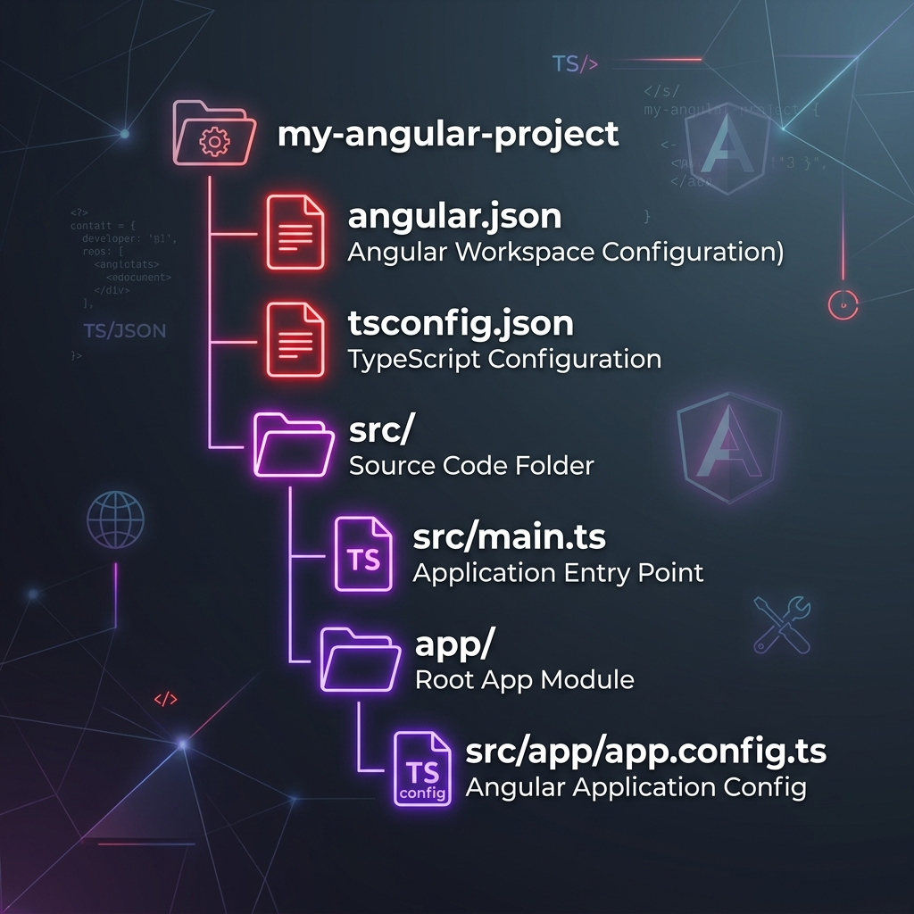

A Comprehensive Pedagogical Guide to Workspace Configuration, Components, Services, RxJS, Forms, Routing, and Optimizations
Examine the workspace configuration files and the step-by-step bootstrapping execution sequence under the hood.
An Angular workspace manages compilation settings, dependency injection boundaries, and asset distribution pipelines. Key configuration files include:
strictTemplates, which enforces type safety for template property bindings.
When a browser loads an Angular application, it follows a specific bootstrapping execution sequence:
app.config.ts) and instantiates the root component, rendering it inside the <app-root> element in index.html.import { bootstrapApplication } from '@angular/platform-browser'; import { AppComponent } from './app/app.component'; import { appConfig } from './app/app.config'; // Bootstraps the root component using the global configuration providers bootstrapApplication(AppComponent, appConfig) .catch((err) => console.error(err));
Explore how components bind data and execute logic during their rendering lifecycle.
Angular components go through a lifecycle from initialization to destruction. You can tap into key moments of this lifecycle using interface hooks:
| Lifecycle Hook | Execution Timing | Typical Use Case |
|---|---|---|
ngOnChanges | Fires before ngOnInit and whenever data-bound inputs change. | Reacting to parent property updates. |
ngOnInit | Fires once after inputs are initialized. | Fetching initial data. |
ngAfterViewInit | Fires after the component's views are initialized. | Direct DOM operations and query selectors. |
ngOnDestroy | Fires right before Angular destroys the component. | Unsubscribing from Observables to prevent memory leaks. |
import { Component, OnInit, OnDestroy, Input, OnChanges, SimpleChanges } from '@angular/core'; import { Subscription } from 'rxjs'; @Component({ selector: 'app-profile', standalone: true, template: '<p>Active User: {{ userId }}</p>' }) export class ProfileComponent implements OnInit, OnChanges, OnDestroy { @Input() userId!: number; private sub = new Subscription(); /* Triggers whenever input properties change */ ngOnChanges(changes: SimpleChanges) { if (changes['userId']) { const prev = changes['userId'].previousValue; const curr = changes['userId'].currentValue; console.log("userId changed from " + prev + " to " + curr); } } ngOnInit() { console.log("Initializing profile components for user ID:", this.userId); } ngOnDestroy() { this.sub.unsubscribe(); /* Prevent memory leaks */ } }
Learn how to create custom directives to manipulate the DOM, and custom pipes to format template data.
Directives allow you to extend the behavior of elements in your templates. Use HostListeners and HostBindings to listen to events and update element properties dynamically.
import { Directive, ElementRef, HostListener, HostBinding } from '@angular/core'; @Directive({ selector: '[appHighlight]', standalone: true }) export class HighlightDirective { constructor(private el: ElementRef) {} @HostBinding('style.backgroundColor') color: string = 'transparent'; @HostListener('mouseenter') onMouseEnter() { this.color = 'yellow'; } @HostListener('mouseleave') onMouseLeave() { this.color = 'transparent'; } }
Pipes transform template output. By default, pipes are **pure**, meaning their transformation logic only runs when their input values change. **Impure** pipes run on every change detection cycle, which can cause performance issues if they contain slow operations.
import { Pipe, PipeTransform } from '@angular/core'; @Pipe({ name: 'exponential', pure: true, /* Only re-evaluates if input value changes */ standalone: true }) export class ExponentialPipe implements PipeTransform { transform(value: number, exponent: number): number { return Math.pow(value, exponent); } }
Master hierarchical dependency injection, providers, and component-level injector scopes.
Angular uses hierarchical dependency injection. Services declared with providedIn: 'root' are singleton instances shared across the entire application. Services declared within a component's providers array are scoped to that component and its children, creating a separate instance for that sub-tree.
import { Injectable } from '@angular/core'; @Injectable({ providedIn: 'root' /* Application-wide singleton */ }) export class LoggerService { log(msg: string) { console.log("[LOG]: " + msg); } }
| Feature | providedIn: 'root' | Component Providers |
|---|---|---|
| Instance Scope | Application-wide Singleton. | Scoped to the component instance and its children. |
| Tree Shaking | Yes. Removed from the bundle if never injected. | No. Bundled if the component is imported. |
| Use Case | Shared state services, API communication classes. | Sandbox state services, form configurations. |
Learn how to build forms, handle user input, and write custom validation logic using Reactive Forms.
Reactive Forms provide a type-safe, explicit way to manage form state and validation logic.
import { Component } from '@angular/core'; import { FormBuilder, FormGroup, Validators, AbstractControl, ValidationErrors } from '@angular/forms'; @Component({ selector: 'app-profile-form', standalone: true, template: ` <form [formGroup]="userForm" (ngSubmit)="onSubmit()"> <input formControlName="email" type="email" placeholder="Email" /> <button type="submit" [disabled]="userForm.invalid">Submit</button> </form> ` }) export class ProfileFormComponent { userForm: FormGroup; constructor(private fb: FormBuilder) { this.userForm = this.fb.group({ email: ['', [Validators.required, Validators.email, this.customDomainValidator]] }); } /* Custom Validator Function */ customDomainValidator(control: AbstractControl): ValidationErrors | null { const email = control.value as string; if (email && !email.endsWith('@store.com')) { return { invalidDomain: true }; } return null; } onSubmit() { console.log(this.userForm.value); } }
Learn how to configure routing, set up lazy loading, and protect routes using navigation guards.
Routing guards allow you to control access to routes based on conditions (like user authentication status).
import { inject } from '@angular/core'; import { CanActivateFn, Router } from '@angular/router'; import { AuthService } from './auth.service'; // Functional CanActivate guard export const authGuard: CanActivateFn = (route, state) => { const authService = inject(AuthService); const router = inject(Router); if (authService.isLoggedIn()) { return true; } return router.parseUrl('/login'); };
Learn how to send network requests, parse JSON data, and configure interceptors to modify request and response headers.
Interceptors intercept and modify outgoing HTTP requests and incoming responses globally (for tasks like injecting authorization headers or logging errors).
import { HttpInterceptorFn, HttpRequest, HttpHandlerFn } from '@angular/common/http'; // Functional HttpInterceptor export const authInterceptor: HttpInterceptorFn = (req: HttpRequest<unknown>, next: HttpHandlerFn) => { const token = localStorage.getItem('authToken'); if (token) { // Clone request to inject headers const clonedReq = req.clone({ headers: req.headers.set('Authorization', 'Bearer ' + token) }); return next(clonedReq); } return next(req); };
Learn about RxJS observables, operator pipelines, and how to handle data reactive flows in Angular.
RxJS Subjects are multicast observables that allow values to be broadcast to multiple observers.
| Observable Type | Behavior | Use Case |
|---|---|---|
Subject | Does not store values. Observers only receive values emitted *after* subscription. | Event emitters, click streams. |
BehaviorSubject | Requires a default value. Stores the latest emitted value and replays it to new observers immediately upon subscription. | Shared state services, user profiles. |
Learn about the OnPush change detection strategy, which optimizes rendering by only checking templates when inputs update.
By default, Angular dirty checks the entire component tree on any asynchronous event. Setting "changeDetection: ChangeDetectionStrategy.OnPush" limits change detection for that component to three conditions:
import { Component, ChangeDetectionStrategy, Input } from '@angular/core'; @Component({ selector: 'app-performance-view', standalone: true, changeDetection: ChangeDetectionStrategy.OnPush, template: '<p>Status: {{ data.status }}</p>' }) export class PerformanceViewComponent { @Input() data!: { status: string }; }
Learn how to write unit tests for components and mock dependencies using the Angular TestBed.
The Angular TestBed configures dependencies and compiles components in a mock environment for testing.
import { TestBed, ComponentFixture } from '@angular/core/testing'; import { CounterComponent } from './counter.component'; describe('CounterComponent', () => { let component: CounterComponent; let fixture: ComponentFixture<CounterComponent>; beforeEach(async () => { await TestBed.configureTestingModule({ imports: [CounterComponent] }).compileComponents(); fixture = TestBed.createComponent(CounterComponent); component = fixture.componentInstance; fixture.detectChanges(); }); it('should create the component', () => { expect(component).toBeTruthy(); }); });
To save this document as a PDF, press Ctrl+P (Windows) or ⌘+P (Mac) and choose "Save as PDF".